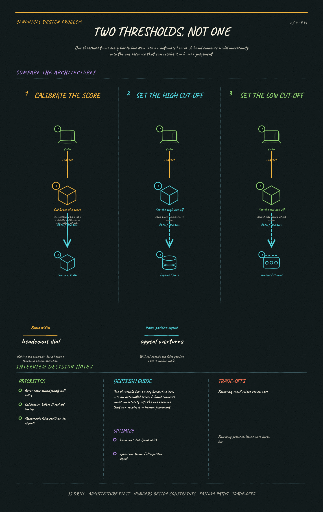
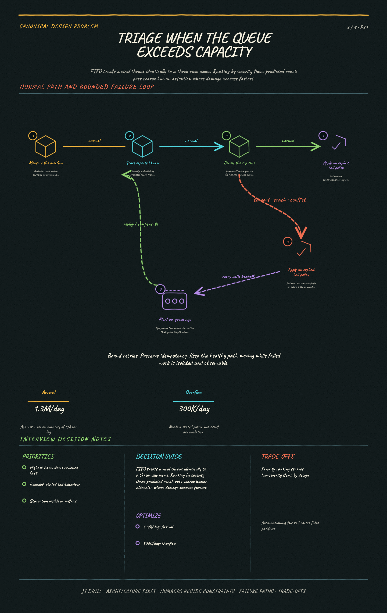
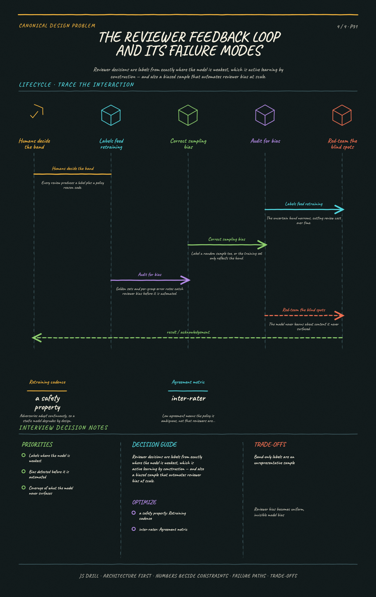

Screen user-generated content at platform scale using classifiers plus a human review queue. The signature challenge is that both error directions cause real harm, so the design is about routing uncertainty to humans rather than pushing a classifier toward perfect accuracy it will never reach.
Canonical Design Problems9 questions
Results carried by this link
The brief
Functional requirements
Screen uploaded content (text, image, video) against policy categories; auto-remove clear violations; queue uncertain cases for human review; support appeals; keep an audit trail.
Categories differ in stakes — CSAM and imminent violence versus spam or mild nudity — and justify different handling, not one pipeline setting.
Both error directions are harmful: a false negative leaves harm live, a false positive silences a legitimate user. There is no 'safe' default.
Auditability and regulatory reporting (DSA, transparency reports) are requirements, so every decision needs a durable record with its reason.
Scale & constraints
100M items/day → ~1,150/s average, design for ~5K/s peak
Classifier inference at that rate is tractable with batching and a cheap-first cascade
The number that decides the design is HUMAN capacity: a 1% uncertain band is 1M reviews/day, at 30s each ≈ 8,300 reviewer-hours — over a thousand full-time reviewers
Moving the uncertain band from 1% to 0.5% halves a thousand-person operation
Reviewer throughput cannot be autoscaled quickly
Catastrophic categories may need synchronous pre-publish blocking; the rest are async within seconds
Key ideas
No classifier is accurate enough to act alone at this scale — the architecture's job is to route confident cases automatically and uncertain ones to humans.
Thresholds encode a policy decision, not a technical one: false positives silence innocent users, false negatives leave harm live, and the ratio differs by content category.
Split the path by stakes — synchronous pre-publish blocking for catastrophic categories, asynchronous post-publish scanning for everything else.
Hash matching (MD5/PDQ/perceptual) catches known-bad content in milliseconds and should run before any model does.
The reviewer queue is the scarce resource, so prioritize by expected harm — reach × severity — not by arrival order.
Human decisions are the label source that retrains the models, which closes the loop but also propagates reviewer bias into the classifier.
Appeals are part of the system, not a support process: without them, false positives are invisible and the false-positive rate is unmeasurable.
Diagrams
4 study sheets · 4 authored diagrams (source below, rendered in the app).
Moderation pipeline system mapSystem mapShow the cheap-first cascade and the three-way routing decision.Open the full-size image

Two thresholds, not oneMechanismShow why a single cut-off is the wrong shape for this problem.Open the full-size image

Triage when the queue exceeds capacityFailureShow why arrival order is the worst possible allocation under overload.Open the full-size image

The reviewer feedback loop and its failure modesLifecycleShow what the loop buys and the three ways it degrades.Open the full-size image
High-level architecture mermaidoverview
Cheap-first cascade then a three-way routing decision — the architecture's job is deciding what a human never has to see.
flowchart LR
U(["Upload"]) --> H{"known-bad<br/>hash match?"}
H -->|"yes"| ACT["Enforce immediately"]
H -->|"no"| PUB{"catastrophic<br/>category?"}
PUB -->|"yes"| SYNC["block until scanned"]
PUB -->|"no"| OPT["publish + enqueue"]
SYNC --> CAS["Classifier cascade<br/>cheap -> expensive"]
OPT --> CAS
CAS --> RT{"score routing"}
RT -->|"high"| ACT
RT -->|"low"| OK(["auto-approve"])
RT -->|"band"| HQ[("Human review queue")]
HQ --> ACT
Two thresholds, not one mermaidmechanism
A single cut-off turns every borderline item into an automated error; a band spends scarce human attention exactly where the model knows least.
flowchart TD
S(["calibrated score 0-1"]) --> A{"score >= high?"}
A -->|"yes"| REM(["auto-remove"])
A -->|"no"| B{"score <= low?"}
B -->|"yes"| APP(["auto-approve"])
B -->|"no"| HUM(["human review"])
HUM --> COST["band width =<br/>reviewer headcount"]
POL["policy owns the cut-offs:<br/>child safety favours recall<br/>spam favours precision"] --> A
POL --> B
Triage when the queue exceeds capacity mermaidfailure
FIFO treats a viral threat like a three-view meme; ranking by severity × reach puts human attention where damage accrues fastest.
flowchart TD
IN(["1.3M/day arriving"]) --> R["rank by expected harm<br/>severity x predicted reach"]
R --> TOP["top 1M reviewed"]
R --> TAIL["overflow 300K"]
TAIL --> POL{"explicit tail policy"}
POL -->|"auto-action"| CONS(["apply conservative threshold"])
POL -->|"expire"| EXP(["age out with audit record"])
TOP --> DEC(["reviewer decision<br/>+ policy reason code"])
ALERT["alert on queue AGE percentiles,<br/>not queue length"] --> TAIL
The reviewer feedback loop and its failure modes mermaidlifecycle
Band-only labels are a biased sample, and reviewer bias becomes classifier bias automated at scale — so random sampling and demographic auditing are corrections, not extras.
flowchart TD
HUM(["human decisions"]) --> LAB[("label store")]
LAB --> RT["retrain"]
RT --> M["narrower uncertainty band"]
M --> HUM
LAB --> F1["bias: labels only from<br/>the uncertain band"]
LAB --> F2["bias: reviewer bias<br/>becomes model bias"]
LAB --> F3["lock-in: never learns<br/>what it never surfaced"]
F1 --> FIX1["label a random sample too"]
F2 --> FIX2["golden sets + per-group<br/>error auditing"]
F3 --> FIX3["adversarial red-teaming"]
Questions 9
Positions 1–9 of the code. Open questions are answered out loud and self-graded, so their characters are Y / p / n rather than option letters.
Scope a content moderation pipeline. What are the functional requirements, and what makes the non-functional targets unusual?
Points a strong answer hits:
Functional: screen uploaded content (text, image, video) against policy categories; auto-remove clear violations; queue uncertain cases for human review; support user appeals; keep an audit trail.
Multiple policy categories with very different stakes — CSAM and imminent violence versus spam or mild nudity — and they justify different handling, not one pipeline setting.
The unusual non-functional property: both error directions are harmful. A false negative leaves harm live; a false positive silences a legitimate user. There is no 'safe' default.
Latency splits by stakes: catastrophic categories may need synchronous pre-publish blocking; the rest can be asynchronous within seconds.
Reviewer throughput is a hard capacity constraint — human review is the bottleneck and cannot be autoscaled quickly.
Auditability and regulatory reporting are requirements (DSA, transparency reports), so every decision needs a durable record with its reason.
State scale: e.g. 100M items/day, which is what forces automation to handle the overwhelming majority.
Model answer: We screen uploads against policy categories, auto-action the clear cases, route uncertain ones to humans, and support appeals with a full audit trail. What makes the non-functional side unusual is that both error directions cause real harm — a false negative leaves harmful content live, a false positive silences a legitimate user — so there is no safe default to bias toward, and the right ratio genuinely differs by category. Latency splits on stakes: catastrophic categories block pre-publish, everything else scans asynchronously within seconds. And the binding constraint isn't compute, it's reviewer throughput — humans can't be autoscaled, so at 100M items a day the architecture's real job is deciding what a human never has to look at.
Estimate the load and, more importantly, the human review capacity.
Points a strong answer hits:
100M items/day ≈ 1,150 items/sec average, peak maybe 3-5x → design for ~5K/sec.
Classifier inference at that rate is significant but tractable: batched GPU inference, and cheap models first to filter.
Human review is the number that decides the design. If 1% of items are uncertain, that is 1M items/day for review.
At ~30 seconds per review, 1M items needs ~8,300 reviewer-hours/day — over 1,000 full-time reviewers. That is the cost of a 1% uncertain rate.
So moving the uncertain band from 1% to 0.5% halves a thousand-person operation — which is why threshold tuning is a business decision, not a tuning detail.
Storage: media must be retained for appeals and audit; hashes of known-bad content are tiny and permanently useful.
Cheap-first cascade matters economically: hash lookup (microseconds) → small text/image classifier (ms) → large multimodal model (100s of ms) only for what survives.
Model answer: 100M items/day is about 1,150/sec average, so design for ~5K/sec peak. Classifier inference at that rate is tractable with batching and a cheap-first cascade. But the number that actually decides the design is human capacity: if 1% of items land in the uncertain band that's 1M reviews/day, and at 30 seconds each that's roughly 8,300 reviewer-hours — over a thousand full-time reviewers. Which means moving the uncertain band from 1% to 0.5% halves a thousand-person operation. That's why I'd treat threshold tuning as a business decision with a cost attached rather than a model-tuning detail, and why the cascade — hash lookup, then small classifier, then large multimodal model only for survivors — is an economic architecture, not just a latency one.
Sketch the architecture. What happens to an item from upload to decision?
Points a strong answer hits:
Upload → hash check against known-bad hash sets (exact MD5 and perceptual PDQ/PhotoDNA) — instant match means instant action, no model needed.
Miss → publish decision: block synchronously for catastrophic categories, otherwise publish optimistically and enqueue for async scanning.
Async path: event to a queue → classifier cascade (cheap models first, expensive multimodal only on survivors) → per-category scores.
Score routing: above the high threshold auto-remove; below the low threshold auto-approve; between them enqueue for human review.
Reviewer tooling consumes a priority queue, records a decision plus a policy reason code, and the decision feeds both enforcement and the training label store.
User signals (reports) are a parallel ingress into the same queue with their own priority weighting.
Enforcement service applies the action (remove, age-gate, demote, strike the account) and writes the audit record.
Appeals re-enter as a distinct queue, reviewed by a different or more senior reviewer than the original decision.
Model answer: Upload hits a hash check first — exact and perceptual — because known-bad content is matchable in microseconds and shouldn't consume a model. On a miss, the publish decision splits by stakes: block synchronously for catastrophic categories, otherwise publish optimistically and enqueue for asynchronous scanning. The async path runs the classifier cascade and produces per-category scores, which route three ways: auto-remove above the high threshold, auto-approve below the low one, human review in between. Reviewers work a priority queue and record a decision with a policy reason code, and that decision does double duty — it drives enforcement and becomes a training label. Reports and appeals are separate ingresses into the same review system, with appeals deliberately routed to a different reviewer than the original decision.
A classifier outputs a 0-1 score per category. Why route a middle band to humans instead of picking one threshold at the point of best accuracy?
A Because model scores are not calibrated probabilities and cannot be compared to a threshold
B Because a single threshold forces every borderline item into an automated error, while a two-threshold band converts the model's uncertainty into the one resource that can actually resolve it — human judgement correct
C Because humans are more accurate than the classifier on every item, so more review is always better
D Because regulators require a human decision on all removals
Why: Best accuracy is the wrong objective when the two error types have different costs and the model is genuinely uncertain near the boundary. One threshold means every borderline item becomes an automated wrong answer in one direction or the other. Two thresholds carve out an explicit uncertainty band and spend human attention precisely where the model has least information — the highest-value use of a scarce, expensive resource. Humans are not uniformly better (they are slower, inconsistent, and worse on high-volume obvious spam), so reviewing everything is both unaffordable and counterproductive.
Deep dive: how do you set the two thresholds, and why is that not a purely technical decision?
Points a strong answer hits:
Thresholds come from the precision/recall curve, but choosing a point on it is choosing an error ratio — and the two errors harm different people.
High-severity categories (child safety, imminent violence): favour recall. Accept more false positives and more review load, because a missed item is catastrophic and a wrongly removed item is recoverable via appeal.
Low-severity categories (spam, mild profanity): favour precision. Over-removal here silences ordinary users at scale for little safety benefit.
So thresholds are per-category, and owned jointly with policy/legal, not by the ML team alone.
The uncertain band width is a capacity dial: widening it improves safety and consumes reviewer hours, which is a budget conversation with a real headcount number attached.
Scores must be calibrated before thresholds mean anything — a raw 0.8 from one model is not the same probability as 0.8 from another, so recalibrate after every model update or the thresholds silently shift.
Context changes the right answer: the same image can be violating or newsworthy, so thresholds should differ by surface and audience.
Measure the false-positive rate through appeals — without an appeals path it is structurally unobservable, because wrongly removed users have no way to tell you.
Model answer: The curve is technical; the point you pick on it is a policy decision, because the two errors harm different people. For child safety or imminent violence I'd favour recall — accept false positives and the review load, because a miss is catastrophic and a wrongful removal is recoverable through appeal. For spam or mild profanity I'd favour precision, since over-removal silences ordinary users at scale for little benefit. That makes thresholds per-category and jointly owned with policy and legal. The band width is effectively a headcount dial, so widening it is a budget conversation. One technical prerequisite people skip: scores have to be calibrated, or a 0.8 from a retrained model isn't the same probability as before and every threshold silently moves. And the false-positive rate is only measurable through appeals — without that path, wrongly removed users have no way to tell you, so the metric doesn't exist.
Reviewer capacity is 1M items/day but the queue receives 1.3M. What is the right prioritization?
A FIFO, so the oldest items are never starved
B Rank by expected harm — model severity × predicted reach — so the highest-damage items are reviewed first and low-harm overflow ages out or is auto-actioned by policy correct
C Random sampling, to keep the reviewed set statistically representative
D Newest first, since recent content is more likely to be actively viewed
Why: Under sustained overload the queue is a triage problem, and FIFO treats a viral video threatening violence identically to a borderline meme with three views — the worst possible allocation of a scarce resource. Ranking by expected harm (severity × reach, where reach can be estimated from the poster's follower count and early velocity) puts human attention where damage accrues fastest. The policy for the tail must then be explicit — auto-action by the conservative threshold, or expire — because an unbounded queue silently becomes a backlog nobody ever reads.
Deep dive: reviewer decisions become training labels. What does that feedback loop buy, and how does it go wrong?
Points a strong answer hits:
Buys: a continuously growing labelled dataset in exactly the region where the model is weakest — the uncertainty band — which is active learning by construction.
Retraining on that data narrows the uncertain band over time, which directly reduces review cost.
Goes wrong — sampling bias: labels only exist for items the model was unsure about, so the training set is not representative of the whole distribution. Mix in random-sample labelling to correct it.
Goes wrong — reviewer disagreement: humans are inconsistent on genuinely ambiguous content. Measure inter-rater agreement; low agreement means the policy is ambiguous, not that reviewers are bad.
Goes wrong — bias propagation: systematic reviewer bias (dialect, language, cultural context) becomes classifier bias, then gets automated at scale, which is worse than the original human bias because it's uniform and invisible.
Goes wrong — feedback loop lock-in: the model only ever learns about content it surfaced, so a category it systematically misses never enters the label set at all.
Mitigations: golden sets with known answers to measure reviewer quality, multi-review for high-stakes categories, deliberate random sampling outside the band, and per-demographic error auditing.
Adversaries adapt continuously, so retraining cadence is a safety property, not a maintenance chore.
Model answer: It buys labelled data exactly where the model is weakest — the uncertainty band — which is active learning for free, and retraining on it narrows the band and cuts review cost. Three ways it goes wrong. Sampling bias: labels only exist for items the model was already unsure about, so the training set isn't representative; the fix is deliberately labelling a random sample too. Bias propagation: systematic reviewer bias around dialect or cultural context becomes classifier bias and then gets automated uniformly, which is worse than the human version because it's invisible and consistent. And lock-in: the model never learns about a category it systematically fails to surface, because those items never enter the label set. I'd mitigate with golden sets to measure reviewer quality, multi-review on high-stakes categories, random-sample labelling outside the band, and per-demographic error auditing.
Design the appeals path and the audit trail. Why are these architectural rather than support concerns?
Points a strong answer hits:
Without appeals, the false-positive rate is structurally unobservable — a wrongly removed user has no channel to tell you, so the metric simply does not exist.
That makes appeals a measurement instrument, not a courtesy: they are the only feedback on the error direction automation is worst at.
Appeals must route to a different reviewer than the original decision, and ideally a more senior one, or you are asking someone to overturn themselves.
Overturn rate per category and per reviewer is the signal: a spike means a threshold drifted, a model regressed, or a policy is ambiguous.
Appeal volume is bursty and correlates with enforcement mistakes, so it needs its own capacity planning rather than sharing the main queue's.
Audit trail: every decision needs the content id, the model version and score, the threshold in force, the reviewer, the policy reason code, and the timestamp.
Model version and threshold matter specifically because 'why was this removed' is unanswerable a month later if the model has been retrained twice since.
Regulatory regimes (DSA and similar) require statements of reasons and transparency reporting, which is only possible if the audit record was captured at decision time.
Retention must outlive the appeal window, and the record must be immutable — an editable audit log is not an audit log.
Model answer: Appeals are a measurement instrument rather than a courtesy: without them the false-positive rate is structurally unobservable, because a wrongly removed user has no channel to tell you, so the number doesn't exist. That makes overturn rate per category the sharpest signal in the system — a spike means a threshold drifted, a model regressed, or a policy is genuinely ambiguous. Mechanically, an appeal must route to a different and ideally more senior reviewer, and appeal volume is bursty and correlated with mistakes, so it needs its own capacity rather than sharing the main queue. The audit record needs content id, model version, score, the threshold in force, reviewer, policy reason code and timestamp — model version and threshold specifically, because 'why was this removed' is unanswerable a month later if the model has been retrained twice. And it has to be immutable and outlive the appeal window; an editable audit log isn't one.
Staff-level wrap-up: what breaks, and what would you monitor?
Points a strong answer hits:
Adversarial drift is the defining failure: bad actors probe and adapt continuously, so a static model degrades by design. Monitor score-distribution shift and evasion patterns (leetspeak, image perturbation, audio overlay).
Perceptual hashing is the counter to trivial re-uploads with minor edits, since exact hashes break on a one-pixel change.
Coordinated campaigns look different from individual violations — detect at the account/network level, not per item.
Backlog is the operational failure mode: if arrival exceeds review capacity for long, the queue grows unboundedly. Alert on queue age percentiles, not queue length.
Monitor precision and recall per category, and the appeal-overturn rate — a rising overturn rate means thresholds drifted or a model regressed.
Reviewer wellbeing is a real system constraint: exposure limits, content blurring by default, rotation. Reviewer burnout shows up as accuracy decay.
Multi-region: content policy and legal obligations vary by jurisdiction, so the enforcement decision may be region-specific even when the classification is not.
Shadow-deploy new models against live traffic and compare decisions before enforcing, because a bad model at 5K/sec does enormous damage before anyone notices.
Model answer: The defining failure is adversarial drift — actors probe and adapt, so a static model degrades by design, and I'd monitor score-distribution shift and known evasion patterns rather than waiting for accuracy metrics to move. Perceptual hashing handles trivial re-uploads that break exact hashes. Operationally the thing that breaks is backlog: I'd alert on queue *age* percentiles rather than length, since length alone doesn't tell you whether anything is aging out. Beyond per-category precision and recall, the metric I'd watch hardest is the appeal-overturn rate, because it's the only direct read on false positives. Two things people leave out: reviewer wellbeing is a genuine system constraint and burnout surfaces as accuracy decay, and new models should be shadow-deployed against live traffic before enforcing — at 5K/sec a bad model does enormous damage before anyone notices.
Reading the s= code
If the URL you opened has an s= parameter, it is a result set: one character per question, in the order the questions appear on this page. Uppercase means credit, lowercase means no credit. The letter is the option index shown here — A is the first option listed.
Character
Meaning
A B C D
multiple choice — picked this option, correct
a b c d
multiple choice — picked this option, wrong
Y
open / typed / fill-in — got it
p
open — partial credit
n
open / typed / fill-in — missed
-
not attempted
One segment: every question on this page, in order.
The order of questions and options on this page is fixed and never changes, which is what makes position alone enough to identify a question. Nothing about the code is stored anywhere — it lives only in the URL its owner chose to share.

{kind=link}
{kind=link}
{kind=link}